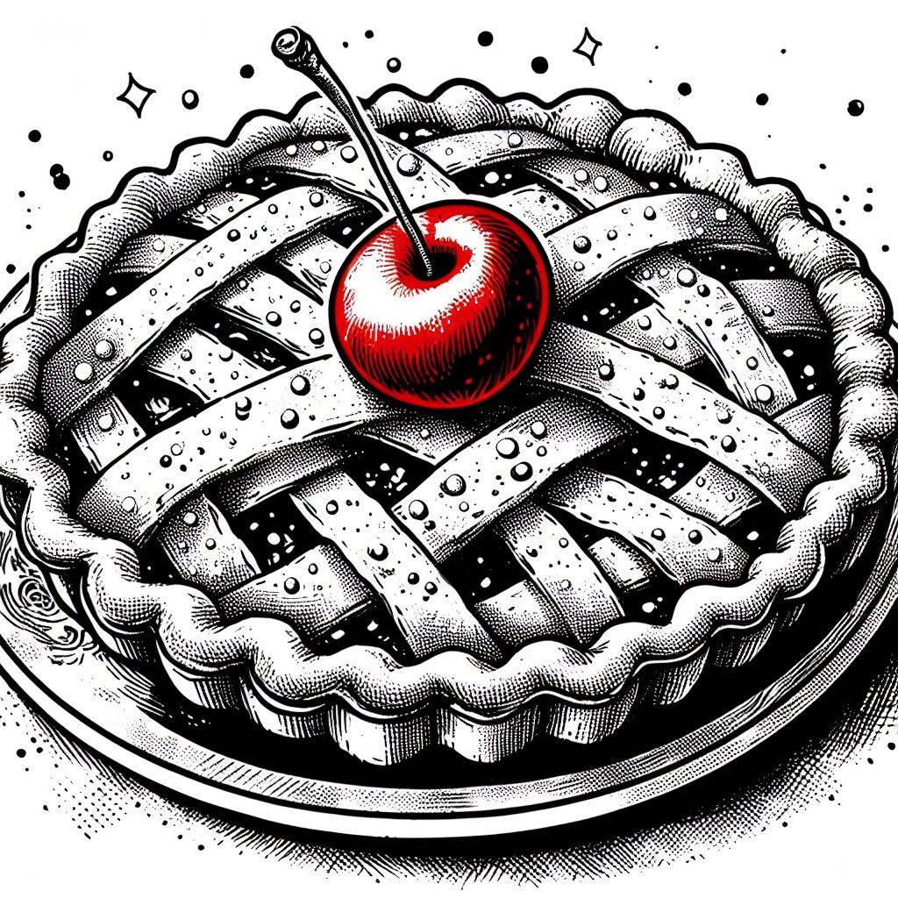

Cherry Pie

Description
This cherry pie recipe is the 1999 American Pie Council's National Pie Championship first-place winner in the Fruit and Berry category.
Ingredients
- all-purpose flour
- salt, shortening, and cold water
- pitted sour cherries
- white sugar
- cornstarch
- butter
- almond extract
Steps
- Place cherries, sugar, and cornstarch in a pan. Let sit until the juices begin to release.
- Bring the mixture to a boil, then simmer until the juices are thickened.
- Remove from the heat, then stir in the butter and almond extract. Let cool.
- In an oven preheated to 375 degrees F, the cherry pie should be perfectly baked in 45-55 minutes. You’ll know the pie is done when the crust is golden brown and the filling is bubbling.